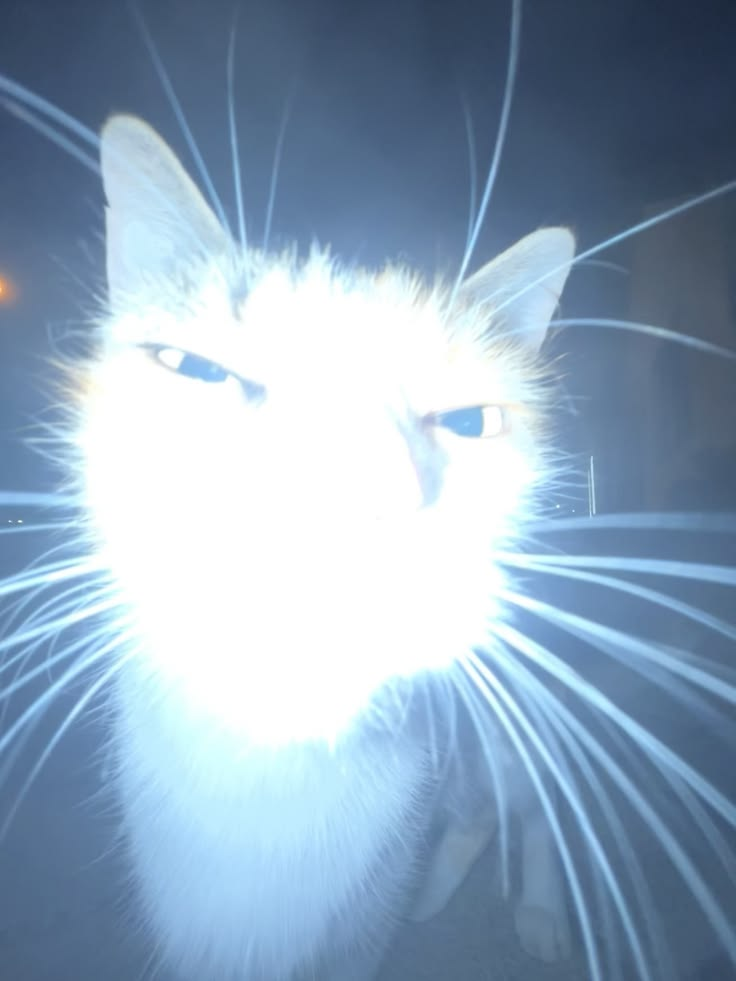

El sistema más inútil del mundo: agita tu celular con fuerza y la pantalla brillará más. Déjalo quieto y se apaga.
Tip: sube el brillo del sistema al máximo para mejor efecto. Por seguridad, ningún navegador deja que una web cambie el brillo real, así que aquí lo simulamos con la pantalla.
